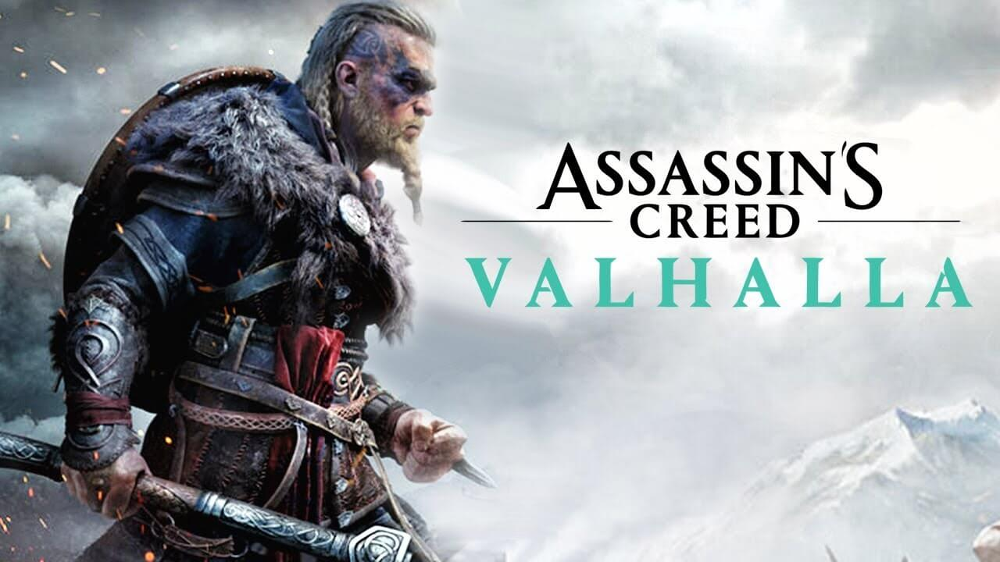

Elden Ring
Elden Ring es un esperado juego de rol de acción desarrollado por FromSoftware y publicado por Bandai Namco Entertainment. Fue creado en colaboración con el aclamado escritor George R.R. Martin. El juego presenta un vasto mundo de fantasía, combates desafiantes, un sistema de progresión del personaje y una historia épica.

The Witcher 3 Game of the Year Edition
The Witcher 3 Game of the Year Edition es un juego de rol desarrollado por CD Projekt RED. Basado en la serie de libros de Andrzej Sapkowski, el juego sigue las aventuras del cazador de monstruos Geralt de Rivia en un mundo abierto lleno de decisiones morales, combates emocionantes y misiones fascinantes. La edición Game of the Year incluye todo el contenido descargable lanzado para el juego.

Assassin's Creed Valhalla
Assassin's Creed Valhalla es un juego de rol de acción desarrollado y publicado por Ubisoft. Situado en la era vikinga, los jugadores asumen el papel de Eivor, un guerrero vikingo, y exploran un hermoso mundo abierto. El juego ofrece combates intensos, toma de decisiones, construcción de asentamientos y una historia envolvente que combina la mitología nórdica y la historia real.
